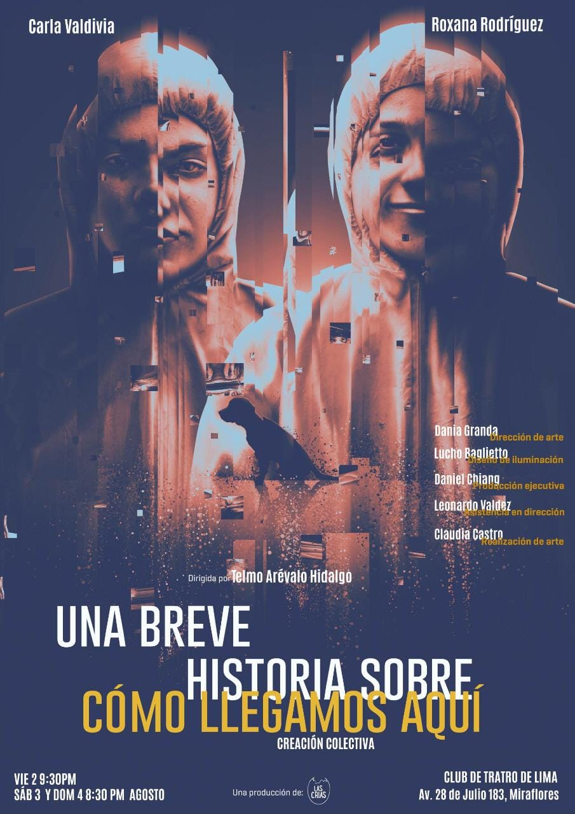

LA MUJER Y EL MAR
ActuaciónCarla, la autora de la obra, intenta descubrir la razón por la que se siente atraída por el mar. Un día, con deseos de aprender a pescar y sin saber que el mar tiene algo que revelarle, se sumerge en las aguas de Lima. ¿Qué es lo que guarda el mar en sus profundidades? ¿Qué es lo que el mar tiene que develarle?

Equipo artístico
- Dirección y dramatugia: Carla Valdivia
- Elenco: Carla Valdivia
- Música oirginal: Favio Rojas
- Dirección de arte: Dania Granda
- Diseño de iluminación: Lucho Baglietto
- Temporada: Teatro Alianza francesa de Miraflores (2023), Teatro de la Universidad de Lima (2023)
- Premios: Mejor unipersonal (2023) - Oficio Crítico
- Prensa:
- Teatro Perú | ¿Qué se esconde al fondo del océano? “La mujer y el mar”, obra que se monta en la Alianza Francesa, explora en las respuestas | Carla Valdivia | LUCES | EL COMERCIO PERÚ
- OFICIO Teatro: "La mujer y el mar" (2023), de Carla Valdivia - Vallejo & Co. | Revista Cultural - POESÍA - FOTOGRAFÍA - NARRATIVA - CINE - MÚSICA - TEATRO - ARTES - PLÁSTICAS - CREACIÓN - CAJÓN DE SASTRE
- OFICIO CRÍTICO: Crítica: LA MUJER Y EL MAR
Una breve historia sobre cómo llegamos aquí
ActuaciónEn un futuro frío y peligroso, dos mujeres consolidan una amistad al empreden un viaje con diferentes destinos, evitando a quienes quieren arrebatarles la memoria.

Equipo artístico
- Dramaturgia: Dramaturgia Colectiva
- Dirección: Telmo Arévalo
- Asistencia de dirección: Leo Valdez
- Elenco: Carla Valdivia y Roxana Rodríguez
- Diseño de arte: Dania Granda
- Diseño de iluminación: Lucho Baglietto
- Temporada: Casa Amaru y Teatro Club de Teatro de Lima (2019) Auditorio del Teatro Británico de Miraflores (2020)
- Prensa:
- UNA BREVE HISTORIA SOBRE CÓMO LLEGAMOS AQUÍ « FAE (ulima.edu.pe)
- Días de teatro | CULTURA | PERU21